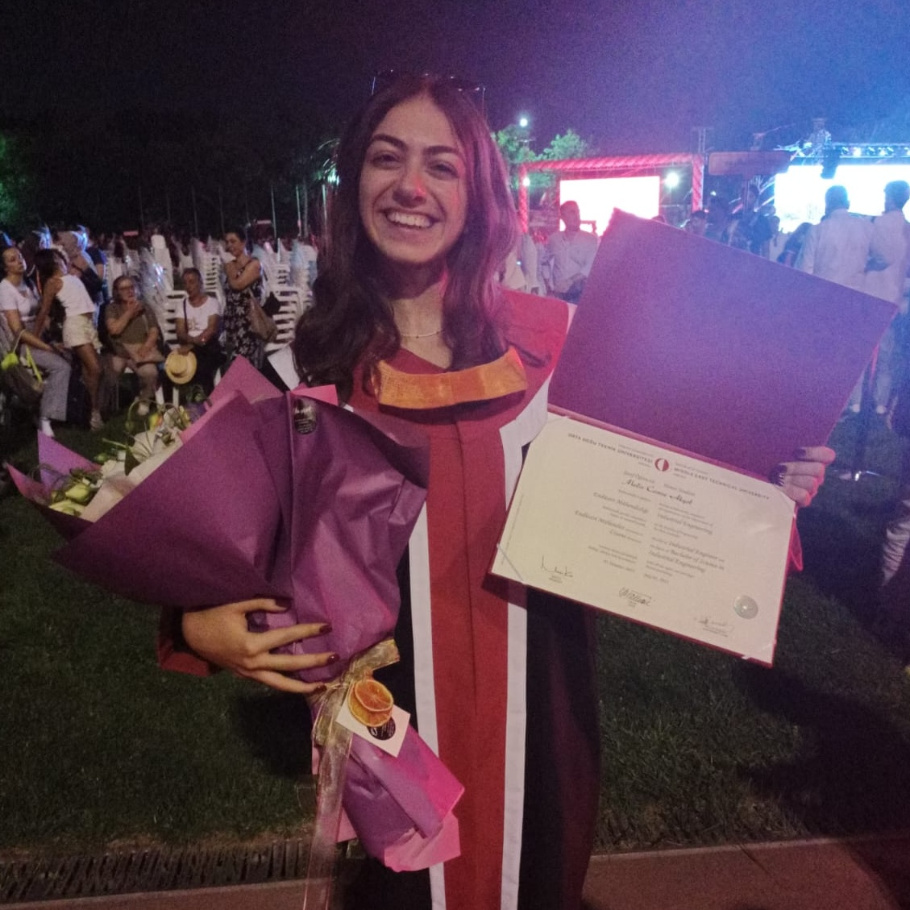

Education
MSc Business Analytics — DTU
I completed my MSc in Business Analytics at the Technical University of Denmark in 2025, with a full tuition scholarship awarded on academic merit.
Master's Thesis
Joint Rebalancing and Dynamic Pricing Policies with MARL for Mobility-on-Demand Systems

BS Industrial Engineering — METU
I completed my BSc in Industrial Engineering at the Middle East Technical University, admitted with a first-place departmental ranking.
Graduation Project
Lubricant Supply Chain Optimization in collaboration with Petrol Ofisi, achieving a 25% cost reduction and 13% improvement in on-time delivery.
